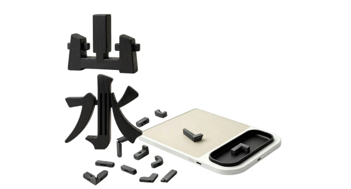
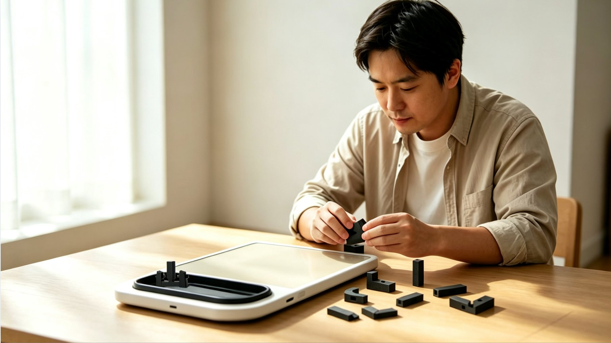
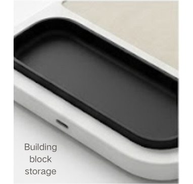
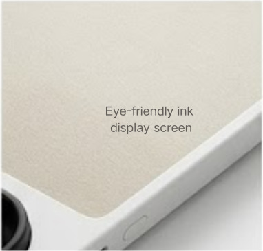
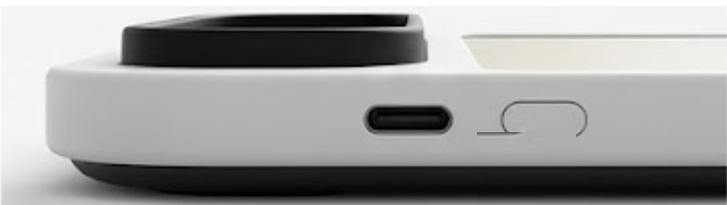
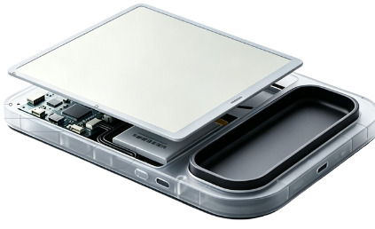
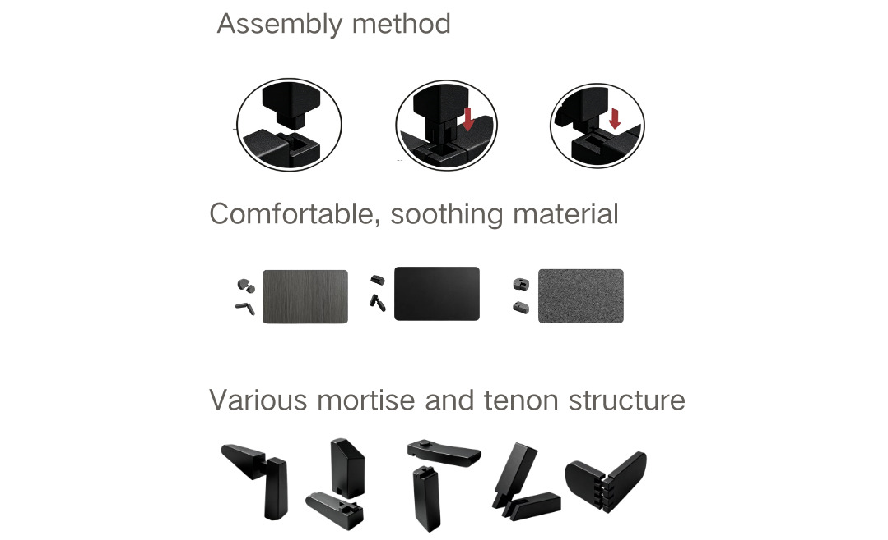
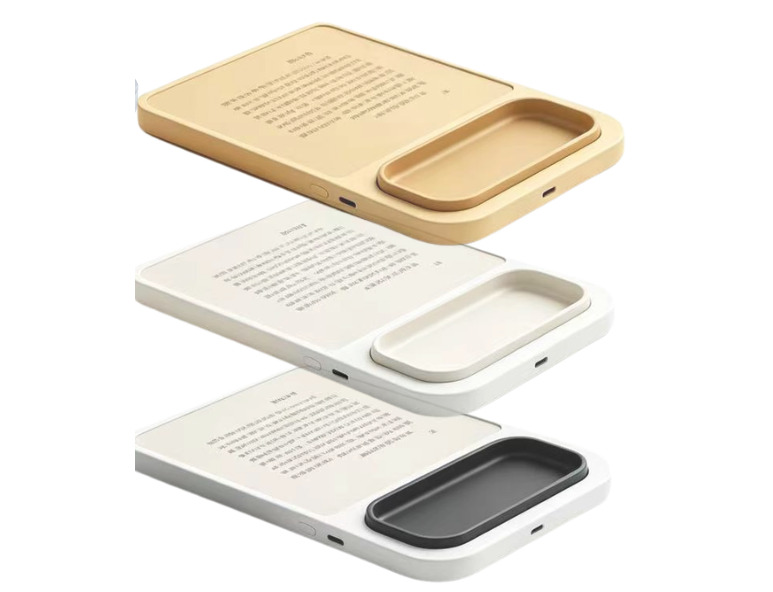
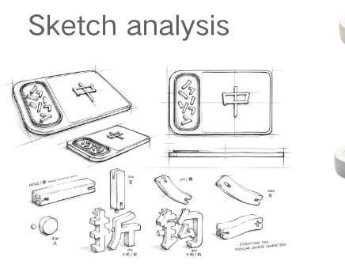
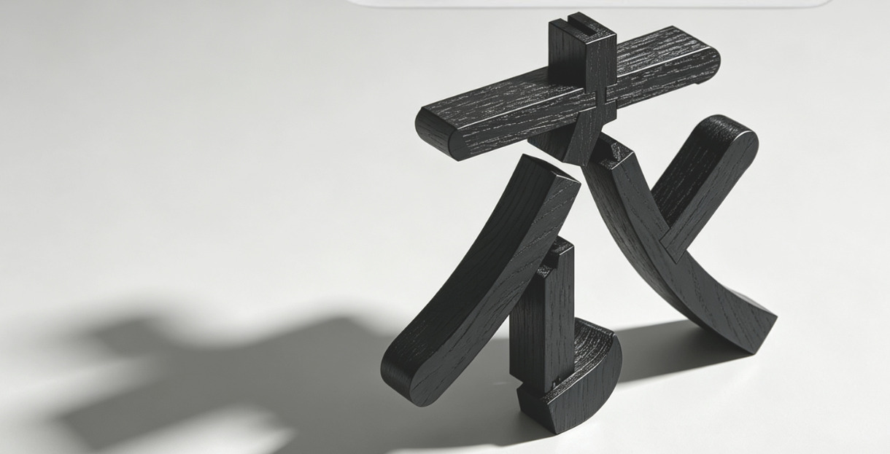

以「衣」字的造型语言承载使用与收纳，让人有一处可以静下来的动作。
山水构将汉字笔画拆解为独立榫卯构件，使用者可对照设备水墨屏上的各式古典诗文字形自由拼接，为奔波于都市的现代人提供一处静心载体，在亲手拼接文字的过程中寻得内心安宁。
Shanshui Gou breaks down Chinese character strokes into independent dovetail components. Users can freely assemble various classical poetic script forms on the device's watercolor screen. This provides a tranquil space for modern individuals busy in urban environments, allowing them to find inner peace through the process of manually assembling text.









